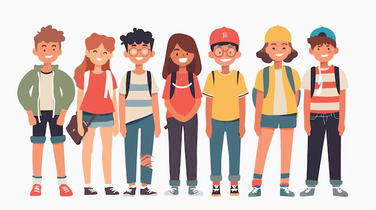
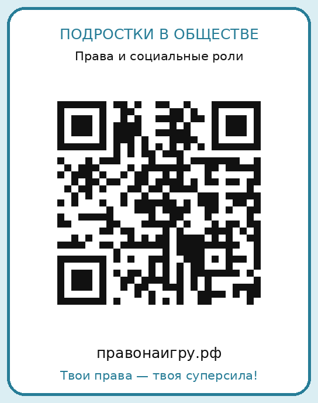

ПРАВА И СОЦИАЛЬНЫЕ РОЛИРазбирайся в правах.
Разбирайся в правах.
Начни с игры.
Школа, семья, интернет и первая работа — узнай, какие права помогают тебе в обычной жизни.

ЗА ПРЕДЕЛАМИ ЭКРАНА
Играй в классе
Оригинальные правила, карточки для печати и словарь «Правосленг».
PDFПравовой маршрут подросткаИгровое поле, правила и 64 карточкиСкачатьPDFПравосленгСловарь подросткового сленга с ситуациями о правах · 10–15 лет PDFПрава подростка. БингоПравила, 32 ситуации и ответыСкачатьPDFСоциальная роль и правоПравила и 20 пар карточекСкачать
О ПРОЕКТЕПодростки в обществе:
Подростки в обществе:
права и социальные роли
Проект исследует, как игры помогают подросткам 10–15 лет понимать свои права и применять знания в жизненных ситуациях.
Автор: Князев Антон
